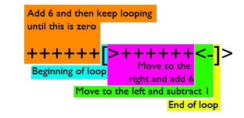
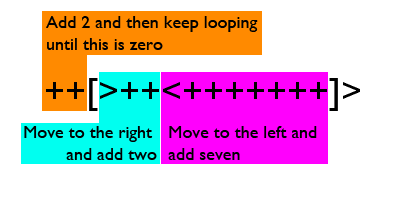

In some languages, if you want to assign the number 10 to the variable x, you might write something like:
x = 10
This doesn’t work in brainfuck, as “x”, “10”, “=”, and the spaces between them are all ignored, they’re not part of brainfuck’s vocabulary. And there’s no special punctuation mark that stands for ten. What was once a given, a constant, now requires a programmatic strategy, and one with stylistic concerns. I can make an easy 36 or a clever 36 or a truly brainfucky 36 that’s short, elegant, and a challenge for anyone else to understand.
Let’s look at examples to make this more clear:
The easy way:
++++++++++++++++++++++++++++++++++++
When you start a brainfuck program, the memory space is all full of zeroes. Instead of x, there’s a byte you can think of as x and which you can get to by moving back and forth (you do that with > and < ). Once we’re at a place in memory we like, we can simply write out 36 plus signs, and there we have it.
Version 2:
++++++[>++++++<-]>
This is multiplying six by six. Here’s how it works:

A loop begins with [ and ends with ] and when the byte referred to just before the loop becomes zero, it ends. So we add six, jump to the right, add six, jump to the left, subtract one, then do this again and again until the left number counts down to zero, leaving us with six plus-signs executed six times (6 x 6) in the right number.
However, there are other, more clever ways to get to 36.
A byte can only hold a number from zero to 255. So another way of writing 36 is with 256 + 36 plus signs:
+++++++++++++++++++++++++++++++++++++++++++++++++++++++++++++++++++++++++++++++++++++++++++++++++++++++++++++++++++++++++++++++++++++++++++++++++++++++++++++++++++++++++++++++++++++++++++++++++++++++++++++++++++++++++++++++++++++++++++++++++++++++++++++++++++++++++++++++++++++++++++++++++++
This is called wrapping. You could keep going and add any multiple of 256 to this and get to the same place.
But this is just spinning the odometer. Things get more interesting when we use this technique in a loop:

Here, we add 2, move to the right and make that 2 as well. Then we move back to the left and add 7, and back to the right to add 2. We do this until the left number is evenly divisible by 256, which happens when we hit 1024. 7 * 146 + 2 = 1024. This means we’ve gone round the loop 146 times. 146 * 2 is 292. 292 - 256 = 36. So we’ve passed zero only once in the right variable, leaving us with the remainder of 36.
In Part 2, we’ll look at nested loops. In the mean time, there’s a fucking huge list of brainfuck constants.
Wrapping
In most brainfuck implementations, a memory cell is a single unsigned byte, meaning it holds a single whole number between 0 and 255. We can’t store numbers like 258 or -20 or 0.5. So what happens when we subtract 1 from 0? It wraps around from the bottom to the top, giving us the maximum value of 255.
You can try this for yourself with in the brainfuck visualizer, entering the program of a single minus sign in the grey box, and hitting Run:
The boxes at the top are a set of memory cells, each initialized to zero. At the start of the program, we’re pointing to the first memory cell, so the minus sign subtracts one from it. With two consecutive minus signs, we’d get 254, and so on.
Subtracting from the left, adding to the right
Now we’re ready to try counting to 36, using wrapping. Here is a program, pulled from esolang.org’s list of brainfuck constants a fantastic resource where esoprogrammers have shared algorithms to reach each constant:
–[>–<+++++++]>
This follows a common two-cell strategy:
1) Give a starting number to the left cell
2) Loop, adding/subtracting from the left and add to the right, until the left is zero and the right gives us the value we seek.
You can run this program in the brainfuck visualizer, or if you’re using a brainfuck interpreter that doesn’t display memory, you can add a period to the end of the program to print the final value. If the program is successful, it will print the ASCII symbol for the value 36, which happens to be:
$
The program in detail
It begins with two minus signs:
–
This counts down by two (0 - 2 = 254) in the first memory cell, giving us:
[254][0]
254 is our starting point going into the loop.
[>–
As we loop, we move to the right and subtract two. The first time through, this gives us:
[254][254]
<+++++++
Then, still in the loop, we move to the left (back into the first cell) and add 7. The first time through, 254 + 7 goes past the zero, landing on 5:
[5][254]
]
When we hit this closing bracket, we’re still in the first memory cell, so this is the cell that matters for the loop – when it hits zero, the loop will end:
[12][252]
[19][250]
[26][248]
…
[250][184]
(when we pass 255, we wrap)
[1][182]
[8][180]
…
[0][36]
How many iterations did it take to get there? We can solve for the right memory cell by finding the first n satisfying (254 + 7n) mod 256 = 0. Or, if we think the number of iterations is less than 256, we can just add a third memory cell and increment it each time by adding >+< (move right, add one, move left):
–[>>+<–<+++++++]>
This gives us:
[0][36][110]
With 110 iterations, the value of the second cell (-2n) is -220. Since there are no negative numbers, we get 256 - 220, or 36. Make sense?
Ok but why???
Fair question. While this example takes longer to run than the examples in Part 1, brainfuck is often written as concisely as possible – this is a stylistic concern reflecting the minimalism of the language itself. Finding the most obscure way to write a brainfuck algorithm, especially in the fewest number of commands, is a fun challenge of working in this crazy language. Also, while in this case our code takes far longer to run than the counting / multiplying examples in Part 1, there are cases when jumping down is faster (as we saw in our single command program to get to 255), so this program can serve as a template to reach other constants.
In Part 3, we’ll look at how these algorithms are discovered, starting with an even more complex (and shorter) approach to the constant 36.